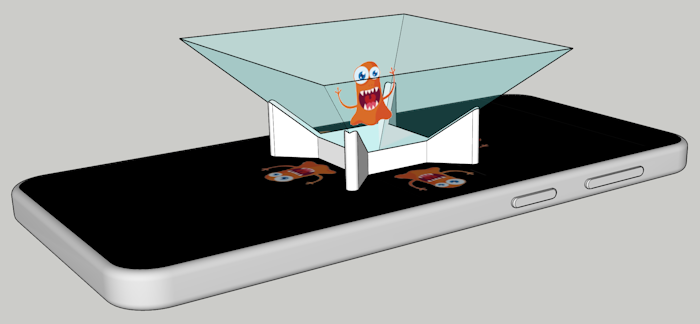
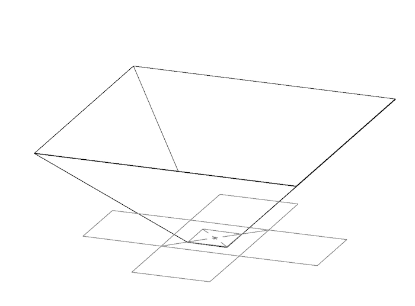

Fabriquer un écran pour hologramme

- Le socle blanc est réalisé avec une imprimante 3D
- La pyramide est un pliage, le patron est modélisé sous Sketchup.
- La vidéo / animation est un programme Scratch
L'image holographique se forme par réflexion de la lumière sur une face inclinée à 45° La pyramide présente donc 4 faces inclinées à 45°
Soit un écran de smartphone de 4’’, il aura 60mm de large, la vidéo holographique devra s'inscrire dans 4 carrés de 20mm de coté.
Un carré de 10mm sera la base de la pyramide. Un carré de 70 mm sera la haut de la pyramide, ainsi il dépassera un peu des bords du smartphone.
